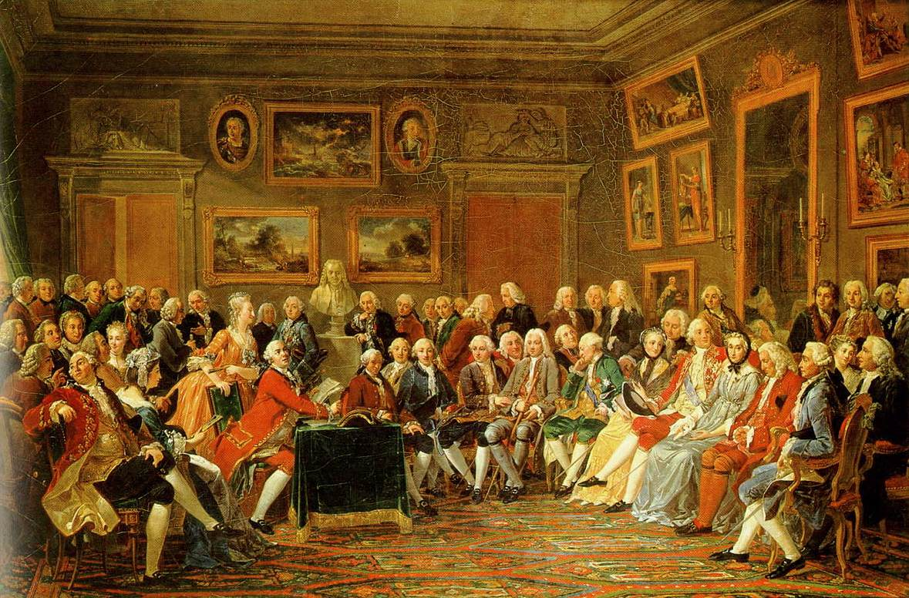

Contexto histórico en Europa
La Ilustración
Cambio de pensamiento

La Ilustración fue un movimiento intelectual del s. XVIII, que promovió la transición del absolutismo a los movimientos políticos y sociales liberales. Dicho movimiento fue el impulsor de la Revolución Francesa.
Algunos de los pensadores más importantes fueron:
- · Rousseau (1712-1778)
- · Voltaire (1694-1778)
- · Montesquieu (1689-1755)